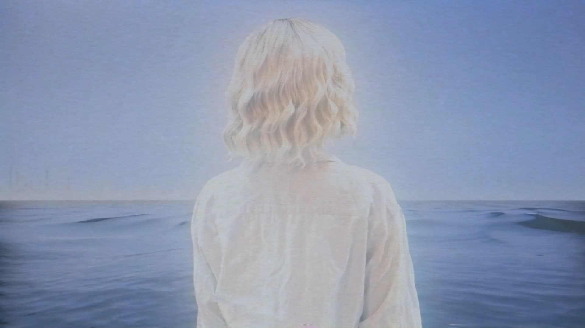

My Nepenthe
In the time of Draco
before the birth of Christ
the Acropolis family
a clan of merchants and miscreants
began selling a strange and powerful narcotic
spanning vast oceans, countless riches
and thousands of years
this is their story…
you're my nepenthe
Ref# :: Created and directed by Stephen Bochco.
Octagon of Dex (theme from Wintermute)
XXXXXXXXXXXXXXXXXXXXX
"In a land beyond time and space
a new reality has emerged...cyberspace!
Where everything is connected
and nothing is sacred.
Into this grim world is brought a hero.
A hero with one and only purpose
to defeat the machine they call..."
wintermute
◊◊◊◊◊◊◊◊◊◊◊◊◊◊◊◊◊◊◊◊◊◊◊◊◊◊◊◊◊◊◊◊◊◊◊◊◊◊
My shoes were getting wet
the zionite puts out his butt
and says the car is coming
the streets were filled with death
I will destroy all of the world
that has not fallen for her
the gradients are a mess
our wheels are covered in the guts
of some old shoryuken
I take an octagon of dex
baby yes, baby yes
and then I started swimming
XXXXXXXXXXXXXXXXXXXXX
*Ref# :: wintermute [pilot episode]. Created by Stephen Bochco. Directed by REDACTED. Based on Neuromancer by William Gibson.
Skynet Syndrome
Ref# ::. Created by Stephen Bochco. Based on material from James Cameron's Terminator and Terminator 2: Judgment Day starring Arnold Schwarzenegger. Features concepts presented in William Tiler Belt's SkyNet Syndrome concept AKA The Magnet to Extinction (ME) theory.
Kodak Boy

"nothing gray void no matrix no grid
on the far rim of consciousness a scurrying
a fleeting impression of something rushing
towards him across leagues of black mirror "
_______
| |
\/ |
kodak boy, kodak boy_____|
it's who we are
it's who we are
i'm sitting here on the beach
i'm staying here on the beach
i'll never leave because
it's who we are
◊◊◊◊◊◊◊◊◊◊◊◊◊◊◊◊◊◊◊◊◊◊◊◊◊◊◊◊◊◊◊◊◊◊◊◊◊◊
[ kodak boy :::::: a hive mind made of photographs]
XXXXXXXXXXXXXXXXXXXXX
*Ref# :: Gibson, William :: Neuromancer, Ch. 23. *Ref# :: wintermute [pilot episode]. Created by Stephen Bochco. Directed by REDACTED. Based on Neuromancer by William Gibson.
Airwolf (Redux)
Ref# ::. Starring: Jan Michael Vincent. Licensed by USA Network.